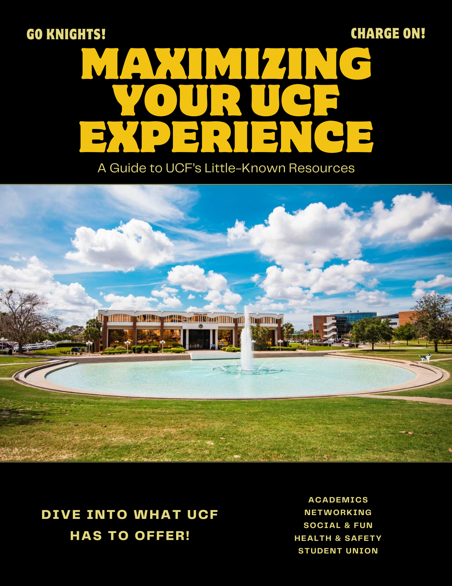
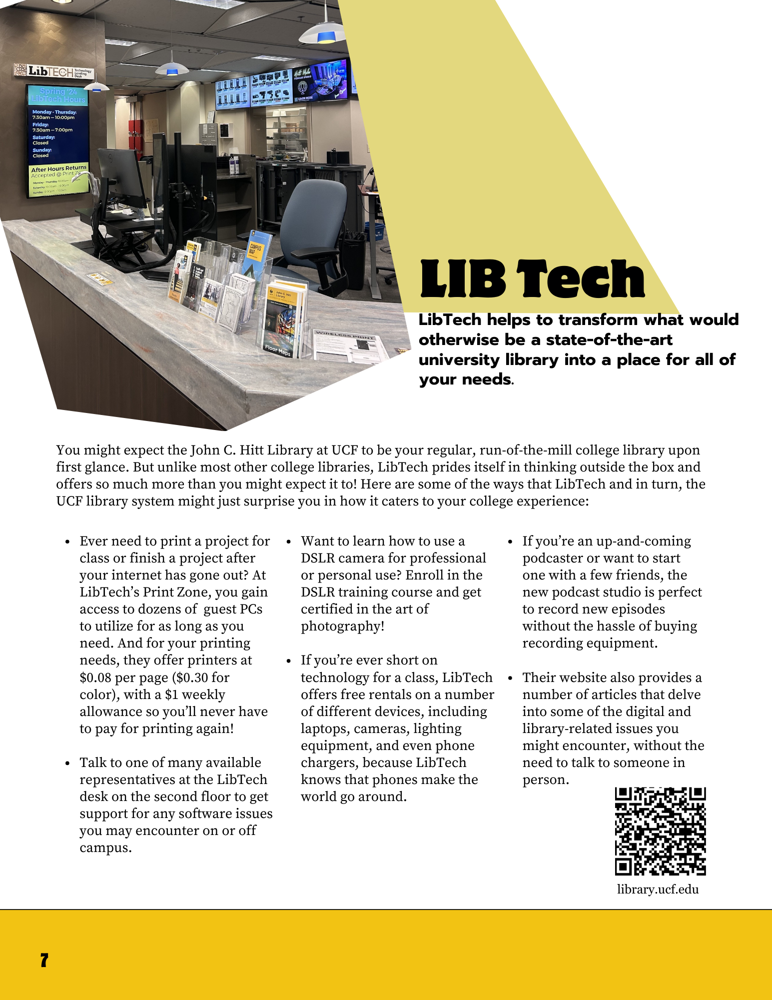
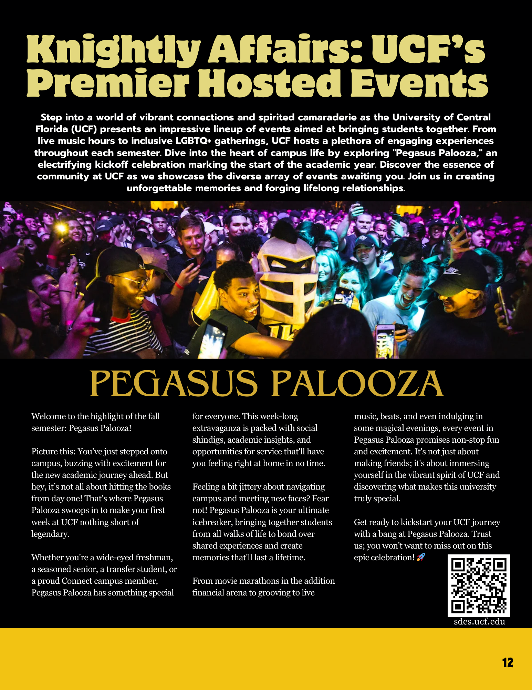
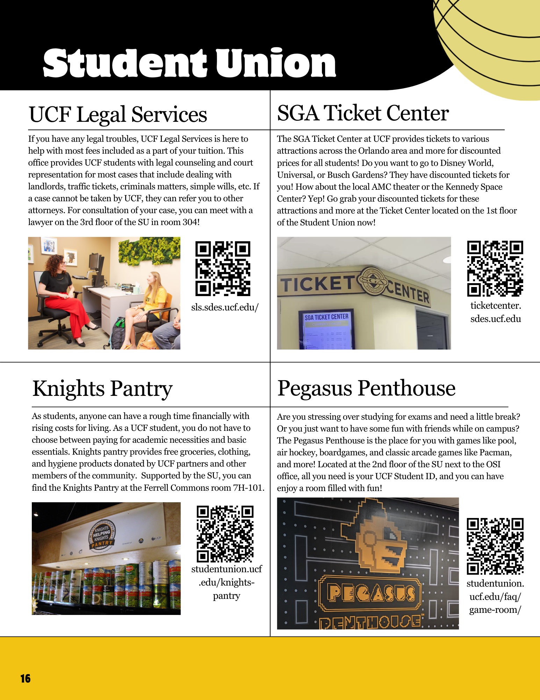

Overview
Research. Write. Revise. Hand it to the student who needs it.
I managed a student team building a resource guide to help new UCF students discover and actually use the campus resources already available to them. We ran the project through a full Kanban workflow from initial research to final delivery. The pamphlet went through multiple revision cycles informed by real feedback, was distributed to students, and was submitted to UCF Student Government.
Pamphlet
Final deliverable




What I did
Responsibilities
- Ran the team’s workload on a Trello board, coordinating progress, deadlines, and handoffs across researchers and writers.
- Researched campus opportunities and services and helped write copy that felt readable and genuinely useful to an incoming student, not bureaucratic.
- Iterated through multiple versions based on feedback from readers and presented the final deliverable to stakeholders.
- Supported distribution to students and collected positive feedback confirming the guide did the job it was meant to do.
Takeaways
Skills exercised
Project management
- Kanban workflow (Trello)
- Task coordination
- Milestone tracking
Communication
- Stakeholder alignment
- Tone matched to audience
- Presentation & walkthroughs
Content
- Research synthesis
- Concise technical writing
- Information design
Process
- Iterative revision cycles
- Feedback incorporation
- Final-deliverable ownership